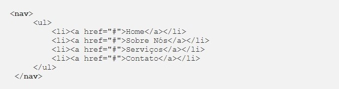
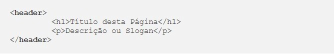
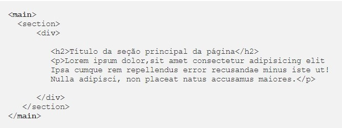
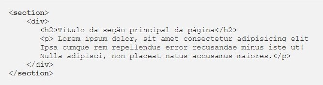
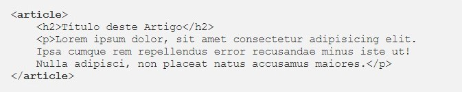
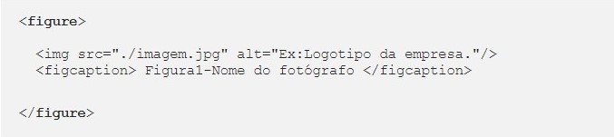
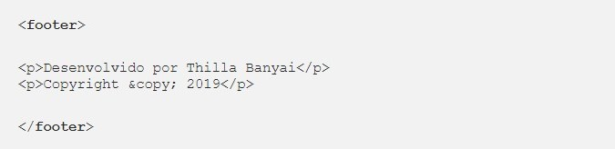

Na versão 5 do HTML as principais modificações estão na estrutura semântica das várias seções da página. Nesta versão da linguagem existem novas tags semânticas para cada grande seção da página!.
É através de cada elemento semântico do HTML5 que os mecanismos de busca do Google e outros sites de pesquisa identificam o conteúdo da página e o elencam como mais ou menos relevante para os seus usuários.
Outro grande ponto é que através dessa estrutura os sites se tornam acessíveis para deficientes visuais que utilizam um leitor de voz para ler o conteúdo.
O elemento <nav> representa um menu de navegação na sua página. Normalmente é o primeiro elemento da nossa página, mas independentemente da posição que você escolher para a sua navbar é boa prática envolver o agrupamento de links com esta tag.
Exemplo de código:
">É utilizado para representar o cabeçalho da página, de um documento ou <section>. É comum utilizá-lo para incluir a logo da empresa ou entidade, título da página, slogan ou uma descrição sobre a página/negócio.
Exemplo de código:
">Este elemento é utilizado para definir qual é a seção principal do seu site. Aquele conteúdo de maior relevância para o usuário. Ao contrário do elemento <section>, é boa prática utilizar este elemento somente uma vez dentro do código.
Apesar de parecer indispensável muitos desenvolvedores não utilizam o main, o que torna o uso dessa tag um critério seu 😉.
Exemplo de código:
">Este elemento demarca um segmento ou seção da página. Geralmente contém um título seguido do conteúdo relacionado a este tópico.
Por exemplo: um restaurante deve separar o seu site em diversas seções que tratarão de um aspecto diferente do seu negócio. A primeira seção abordará uma rápida apresentação do restaurante, a segunda seção terá o cardápio do dia, a terceira seção falará sobre contato, localização e horário de funcionamento.
Para que fique mais claro observe o esquema de blocos abaixo:
Exemplo da disposição de elementos semânticos HTML visualmente.
É principalmente dentro deste elemento que setorizamos o conteúdo do site para que fique organizado e objetivo. Assim o usuário conseguirá compreender e encontrar facilmente onde cada tipo de informação está sendo apresentada a ele.
Exemplo de código:
">Este elemento pode ser utilizado quando queremos incluir um conteúdo que independe de outras seções do HTML ou outro tipo de elemento mãe. É comumente utilizado para posts de blogs ou fóruns, um artigo de jornal, comentários de clientes e usuários.
É boa prática atribuir um título para cada <article> no seu código.
Exemplo de código:
Elemento utilizado para envolver a inserção de figuras/imagens e seus atributos. Trás a possibilidade de atribuição de descrição da figura através da tag <figcaption>, envolvendo tudo isto em um elemento específico.
Exemplo de código:
">Este elemento é utilizado quando buscamos enfatizar um trecho de um conteúdo/artigo na página. Ou até mesmo para dispor um conteúdo à parte do restante da página, como uma sidebar.
É utilizado principalmente quando queremos chamar atenção para uma informação adicional ou enfatizar um trecho de texto que, sendo semanticamente ‘codada’ dentro de <aside> será posicionado separadamente do conteúdo principal.
Exemplo de código:

O último elemento que gostaria de apresentar hoje é o <footer>, nosso querido rodapé de página. Geralmente é onde colocamos informações de direitos autorais, links para documentos, informações do autor, etc.
Exemplo de código:
">Existem outros elementos semânticos no HTML5 então não deixe de pesquisar e aplicar no seu código! Para mais informações sugiro estas duas fontes que também consultei para escrever este artigo. DevMedia e Mozilla Developer.
FONTE: Conhecendo os elementos semânticos do HTML5 - acesso em 12/09/2021
Última modificação em: 12/09/2021 às 19:31, horário oficial de Brasilia - Brasil
G. EMANUEL
@emanuel18.iec |
1 2 / 0 9 / 2 0 2 1 |
|---|